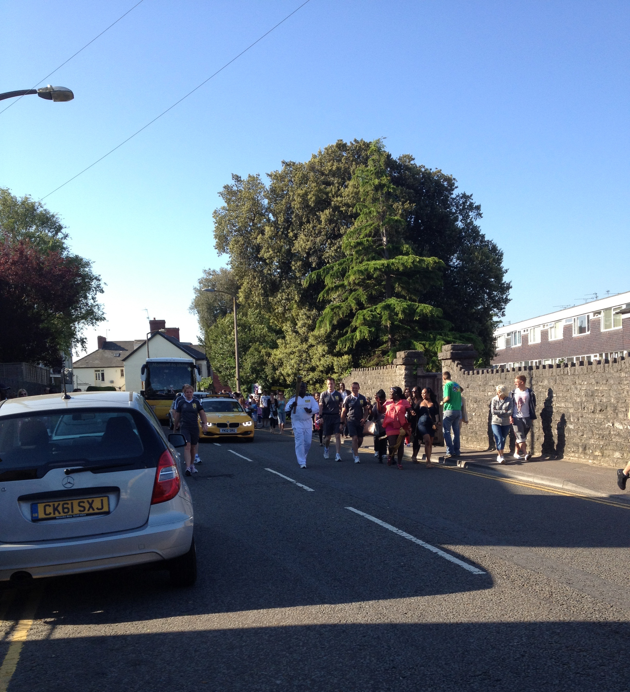

Olympic Torch Relay
Saturday 26th May 2012
I was up and about at 7.30am, out of Mum's back garden door and up the back lane to St Nicolas Road to wait for
the Torch relay to appear. There were more people there than I expected. First up in the Torch Relay were the
police motorcycle riders. First one parked in the road. Then he moved on to the roundabout by All Saints, and 2 more took his place.
 Then came the publicity
vehicles trying to whip up the excitement with loud music and a woman on the tannoy shouting Hello Barry, the torch will be hear in 5 minutes.
That proved a touch optimistic. The first publicity vevicle was a large Samsung Lorry.
Next along was the Coca Cola vehicle, and finally we got a Lloyds TSB truck.
After a bit a bus appeared, again with motorcycle riders, and a black guy got off by
the flats wearing the naff torch relay white tracksuit, carrying a torch. The bus moved on with the remaining
torch carriers and torches. The torch bearers family were waiting for him, and gathered around him excitedly. One of the motorcycle
outriders fell off his bike up by All Saints, and got one of the louded cheers of the day.
A few more motorcycle outriders heralded the actual arrival of the official torch relay. Plus there were a couple of the accompaniying Met
Police officers on pedal bikes. The guy on my side of the road must have thought he was going to have a nice flat day at the seaside. As he
puffed past he asked "Have you got any more hills in this town?"". In his defence he had just cycled all the way up Ship Hill and it was still
up hill all the way to Romilly Schools.
The large vehicle with the press on appeared at the top of the hill, so I had to move to the opposite side of the road to see the
Torch Kiss. ie the previous torch bearer and the next torch bearer moved their
torches together, so that the next torch was lit. The black guy who turned out to be a granddad from London,
jogged his way passed us with his family running alongside taking pictures. He slowed down quite a bit as he made his way up to the
roundabout at All Saints where he was due to handover. At least he didn't have to
run up Ship Hill. It was a surprisingly emotional moment to see the torch pass by, and there were loads of people clapping and cheering. I
followed Viv and Alan back down to the house. Mum had been sat with the patio door open and heard the women on the tannoy so felt a lttle part
of it. You can see how close the house is by the photo I took from where I watched the Torch go by.